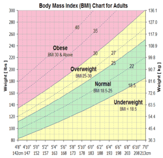

<section id="course-section">
  <div class="">
    <div class="text-center my-5">
      <p class="text-secondary text-center my-5 font-weight-bold" style="font-size: 30px !important;">Have more
        questions?</p>
    </div>
    <div class="container">
      <div class="row info bg-white">
        <div class="col-md-6 mt-5">
          <nb-accordion>
            <nb-accordion-item>
              <nb-accordion-item-header role=link>
                <h3 class="text-center tt">What BMI means ?</h3>
              </nb-accordion-item-header>
              <nb-accordion-item-body>
                <p>Body mass index is known as a way to estimate body
                    fat according to human weight and height. Studies
                  have shown that high body mass index (BMI) is significantly associated with the risk of developing
                  chronic diseases such as heart disease, hypertension, and adult grade 2 diabetes.</p>
                <p>The body mass index (BMI) gives a reasonable estimate of body fat in women, men, young, or elderly
                  body's, but there are limits to this older people, <br>
                  For example : have low muscle mass, and underestimated body fat, but for fit or very muscular people
                  they have overestimated fat.
                </p>
              </nb-accordion-item-body>
            </nb-accordion-item>
          </nb-accordion>
        </div>
        <div class="col-md-6 mt-5">
          <nb-accordion>
            <nb-accordion-item>
              <nb-accordion-item-header role=link>
                <h3>The limitations of BMI ?</h3>
              </nb-accordion-item-header>
              <nb-accordion-item-body>
                <p>Although the BMI is widely used and widely used, it has limitations; ultimately, it is merely an
                  estimate of body composition that cannot be taken into account because of our different body types,
                  muscles, bones, and fat mass.</p>
                <p>For people to measure their weight properly, other methods must be used in addition to the BMI. </p>
              </nb-accordion-item-body>
            </nb-accordion-item>
          </nb-accordion>
        </div>
        <div class="col-md-6 mt-4">
          <nb-accordion>
            <nb-accordion-item>
              <nb-accordion-item-header role=link>
                <h3>Doctors opinions in calculating BMI ?</h3>
              </nb-accordion-item-header>
              <nb-accordion-item-body>
                <p> In calculating the BMI for adult women and men doctors said it is not reliably accurate because it
                  measures not only excess fat but also excess body weight as a whole. Measurement may be influenced by
                  other factors, including age, gender, or ethnicity, as well as activity level and fat mass.</p>
                <p>On the contrary, older people measured with BMI have a healthy weight, regardless of whether their
                  activity is limited, and their excess fat mass is not heavy. If we look at the bodies of bodybuilders
                  we will find that their weight isn't healthy according to BMI because they are heavyweight. </p>
                <p> After all, they have a great number of muscles so their bodies are healthy according to the CCD.</p>
              </nb-accordion-item-body>
            </nb-accordion-item>
          </nb-accordion>
        </div>
        <div class="col-md-6 mt-4">
          <nb-accordion>
            <nb-accordion-item>
              <nb-accordion-item-header role=link>
                <h3>Is measuring BMI for teenagers and children the same as above?!</h3>
              </nb-accordion-item-header>
              <nb-accordion-item-body>
                <p>Children and teenagers measuring BMI are different if we Apply the factors that occur from the
                  effectiveness of the mass index in adults will negatively affect their sexual and physical maturity.
                </p>
                <p>The <a href="https://en.wikipedia.org/wiki/Body_mass_index" target="_blank"
                    rel="noopener noreferrer">body mass index</a> and body fat index in children vary according to
                  obesity and thinness. This
                  difference is due to the fat-free mass.</p>
              </nb-accordion-item-body>
            </nb-accordion-item>

          </nb-accordion>
        </div>
        <div class="col-md-6 mt-4">
          <nb-accordion>
            <nb-accordion-item>
              <nb-accordion-item-header role=link>
                <h3>Is Body Mass Index secure?!</h3>
              </nb-accordion-item-header>
              <nb-accordion-item-body>
                <p>You may ask yourself if BMI is reliable or not, so I will give you the answer, as mentioned earlier
                  that BMI is the way to estimate body fats using weight and height.
                </p>
                <p> The importance of BMI is represented in how it helps to limit the risk of Chronic disease incidences
                  like diabetes, liver
                  disease, high blood pressure, several types of cancer, and sleep apnea, but it's not a perfect test
                  for pregnant women and high muscle mass, and it may not be good in
                  measuring the health of children.</p>
                <p>According to WHO millions of people died due to being overweight so
                  people with high BMI Are prone to chronic diseases.
                </p>
              </nb-accordion-item-body>
            </nb-accordion-item>
          </nb-accordion>
        </div>
        <div class="col-md-6 mt-4">
          <nb-accordion>
            <nb-accordion-item>
              <nb-accordion-item-header role=link>
                <h3>Who should be excluded from measuring body mass?</h3>
              </nb-accordion-item-header>
              <nb-accordion-item-body>
                <p>There are three types of people who should not perform BMI because BMI shows incorrect results. </p>
                <ol type="1">
                  <li>First pregnant women This is because the bodies of pregnant women undergo several changes during
                    this period, so it is not measured correctly.</li>
                  <li>Second for muscle builders, their body mass can be given as a wrong indication of obesity, but
                    it's a wrong measure, because their body's muscle percentage is higher than fat, and that's not
                    considered obesity.</li>
                  <li>Third for people of Asian origin, Asian people, in particular, have an accumulation of abdominal
                    fat that makes their bodies look like apples, not pears, as other people do. So they have a lower
                    BMI than people of Caucasian origin. The fat mass is concentrated in the stomach Therefore, most of
                    these people experience heart problems, blood pressure, and diabetes.</li>
                </ol>
              </nb-accordion-item-body>
            </nb-accordion-item>
          </nb-accordion>
        </div>
        <div class="col-md-6 mt-4">
          <nb-accordion>
            <nb-accordion-item>
              <nb-accordion-item-header role=link>
                <h3>How does BMI help us in our daily life?!</h3>
              </nb-accordion-item-header>
              <nb-accordion-item-body>
                <p>BMI calculators help us eliminate the risk of obesity or thinness.
                  If a person has obesity it's lead to a range of chronic conditions including:
                </p>
                <ol>
                  <li>Diabetes type 2</li>
                  <li>High blood pressure</li>
                  <li>CANCER</li>
                  <li>Musculoskeletal problems</li>
                </ol>
                <p>If a person has thinness it's lead to a range of chronic disease including:</p>
                <ol>
                  <li>Anemia</li>
                  <li>Risk of malnutrition</li>
                  <li>Osteoporosis.</li>
                  <li>And many other diseases were discovered over time.</li>
                </ol>
              </nb-accordion-item-body>
            </nb-accordion-item>
          </nb-accordion>
        </div>
        <div class="col-md-6 mt-4">
          <nb-accordion>
            <nb-accordion-item>
              <nb-accordion-item-header role=link>
                <h3>How to lose weight healthily?!</h3>
              </nb-accordion-item-header>
              <nb-accordion-item-body>
                <p>BMI calculators help us eliminate the risk of obesity or thinness.
                  If a person has obesity it's lead to a range of chronic conditions including:
                </p>
                <ol type="1">
                  <li>Eat a healthy breakfast: eat fresh fruit salad, food full of fibers and vitamins, or anything
                    healthy, but don't skip your breakfast.</li>
                  <li>Drink a lot of water, drinking water makes you feel full.</li>
                  <li>Do exercise every day, if you have no time to do it try to walk to your work or your nearest bus
                    station before going to work or before going to school.</li>
                  <li> If you are overweight you have to visit a doctor and ask him to help you.</li>
                </ol>
              </nb-accordion-item-body>
            </nb-accordion-item>
          </nb-accordion>
        </div>
        <div class="col-md-12 mt-4 mb-5">
          <nb-accordion>
            <nb-accordion-item>
              <nb-accordion-item-header role=link>
                <h3>The importance of measuring Waist circumference and How to measure it correctly?!</h3>
              </nb-accordion-item-header>
              <nb-accordion-item-body>
                <p>Some people believe that waist circumference is a way of determining whether an individual's body is
                  healthy, but it is actually a screening tool and is not fully relied upon to determine an individual's
                  health. </p>
                <p> To measure your waist circumference correctly you have to stand and place a tape measure around your
                  middle correctly above your hip bones. Keep the tape around your wish then breathe out and measure
                  your waist.</p>
                <p> People with a very big waist circumference are about to have different kinds of diseases like
                  diabetes and high blood pressure. Pregnant women aren't allowed to measure their waist because their
                  bodies are not in their <a href="/health/body-shape-calculator/">normal shape</a>.</p>
              </nb-accordion-item-body>
            </nb-accordion-item>
          </nb-accordion>
        </div>
      </div>
      <p class="text-secondary text-center my-5 font-weight-bold" style="font-size: 30px !important;">
        Learn more about Body Mass Index Calculator
      </p>
      <!-- new content -->
      <div class="row border shadow bg-white my-4">
        <div class="col-md-12 mx-2 my-4">
          <p>Body Mass Index, or BMI for short, is a word used in almost every human health-related discipline. It is
            used by personal trainers, nutritionists, doctors, and epidemiologists to classify <a href="/health/ideal-weight-calculator/">body weight</a> depending on
            a person's height and weight.</p>
          <p>It is one of the instruments that is utilized in contemporary medicine the most. Despite this, there are
            many unanswered concerns regarding this measure and it is not generally understood. For instance, BMI
            frequently fails to take into consideration the difference between lean and fat mass. In any case, as a
            whole, it serves as a good risk prediction tool.</p>
          <p>We will explain what BMI is, how to understand it, and what this figure implies to you and your clients in
            the sections that follow.</p>
          <h3 class="text-secondary">What is BMI?</h3>
          <p>Body mass index, or BMI, is a metric used in medicine to define a person's healthy bodyweight. In essence,
            it is a mathematical technique that estimates and classifies a person's body weight using two metrics:
            height and weight.</p>
          <p>Depending on whether you use the metric system or the imperial system, there are two ways to determine BMI.
            Although imperial can be used, the metric equation is the most popular.
            After calculating BMI, the result is divided into groups with the goal of defining the person's body weight.
            Additionally, dependent on age, BMI measures are used differently; those under the age of 2 are considered
            children, while those above 20 are considered adults.
          </p>
          <h3>BMI Chart</h3>
          <div class="d-flex justify-content-center">
            <div class="col-md-6 px-0">
              
            </div>
          </div>
          <h3 class="text-secondary">BMI Formula</h3>
          <p>Height and weight are used in the BMI calculation to get an index measurement with no units.</p>
          <h4>- English BMI Formula (Imperial)</h4>
          <p style="background: #eff0f1;border: 1px solid #bbb; padding: 10px;margin-left: 30px;">BMI = (Weight in
            Pounds / (Height in inches x Height in inches)) x 703</p>
          <h4>- Metric BMI Formula</h4>
          <p style="background: #eff0f1;border: 1px solid #bbb; padding: 10px;margin-left: 30px;">BMI = (Weight in
            Kilograms / (Height in Meters x Height in Meters))</p>
          <p>If Mary now weighs 160 lb (72.57 kg) and is 5 ft 7 in or 67 in tall, you may get her BMI score using either
            calculation (1.70 m).
            BMI equals 25.1.</p>
          <h4>BMI Interpretations for Children and Teens</h4>
          <p>Children and teen BMI interpretations
            Although BMI is computed in the same way for adults and children, it is used in various ways. Unlike BMI for
            adults, which is not affected by age or sex, BMI for children and teens is.
          </p>
          <p>A percentile chart is used to determine the weight category that pertains to children and teenagers (the
            one we use in our calculator comes from data obtained from the World Health Organization . The percentile
            chart contrasts children's and adolescents' BMIs with those of people of the same age and sex. For instance,
            if children or teenagers have a BMI that is higher than 75% of persons of the same age, they are in the 75th
            percentile.</p>
          <h3 class="text-secondary">Body Mass Index</h3>
          <p>The Ponderal Index (PI) assesses a person's leanness or corpulence depending on their height and weight,
            much like the BMI does. The key distinction between the PI and BMI is that the height in the calculation is
            squared rather than rounded in the former (provided below). </p>
          <p>BMI is a valuable tool when analysing huge populations, but it cannot accurately assess an individual's
            leanness or corpulence. Whereas both the PI and BMI have comparable limitations, the PI is more accurate
            when used with extremely tall or very short people, while the BMI tends to reflect unusually high or low
            amounts of body fat for those at the extreme ends of the height and weight continuum.</p>
          <h4>BMI Limitations</h4>
          <p>As mentioned above, because BMI doesn't measure body fat directly, it is regarded as a flawed indicator of
            body fat. In addition, BMI charts do not take into consideration factors that may affect your body fat or
            muscle, such as age, gender, race, and ethnicity (with the exception of age and sex for children and
            teenagers). In reality, experts point out that in addition to weight, you need also evaluate the
            distribution of fat, total muscle mass, age, and gender. Think about these restrictions while determining
            your BMI.</p>
          <h4>In adults:</h4>
          <p>Age, sex, ethnicity, muscle mass, body fat, degree of exercise, and other variables all have an impact on
            BMI. For instance, an elderly person with a healthy weight who is fully sedentary in everyday life may have
            a lot of extra body fat while not being overweight. In contrast, a younger individual with a greater muscle
            composition and the same BMI would be seen as healthy.It is certainly feasible that sportsmen, especially
            bodybuilders who would be labeled overweight because muscle weighs more than fat, are actually at a healthy
            weight for their body composition. According to the CDC, typically:</p>
          <ul>

            <li>With the same BMI, older persons often have more body fat than younger adults.</li>
            <li>For an equivalent BMI, women typically have more body fat than men do.</li>
            <li>Due to their large muscle mass, athletes and those who are muscular may have BMIs that are higher.</li>
          </ul>
          <h4>In children and adolescents:</h4>
          <p>In children and adolescents:</p>
          <p>
            Children and adolescents can also be affected by the same variables that restrict the effectiveness of BMI
            in adults. Height effect children's BMI and body fat. In contrast to overweight children, whose BMI may be
            caused by higher levels of either fat or fat-free mass, obese children's BMI is a better predictor of extra
            body fat than it is for overweight children.
          </p>
          <p>However, for 90–95 percent of the population, BMI is a reliable indicator of body fat and may be used in
            conjunction with other measurements to establish a person's health.</p>
          <h4>Risks Associated with a High BMI</h4>
          <p>Technique predicting. BMI is one of the most useful risk prediction tools we have in contemporary medicine
            when we look at human health data. This is particularly true when BMI is used to estimate the likelihood of
            developing chronic illnesses and many of the major causes of mortality.</p>
          <p>Here is a list of the top 5 health dangers of having a high BMI.</p>
          <ul>
            <li>Cardiovascular Disease: As BMI rises, so does the chance of developing cardiovascular disease. According
              to certain research, those with the highest BMI categorization are three times more likely than people
              with normal BMI to experience a cardiovascular incident. However, being in the highest category is not
              necessary; even people who are "overweight" have a 20% increased chance of experiencing a cardiovascular
              incident (Khan et al., 2018).</li>
            <li>One of the most reliable indicators of developing diabetes is BMI. In fact, according to some studies,
              people with an "overweight" BMI have a roughly six-fold higher risk of developing diabetes than people
              with a normal BMI.</li>
            <li>Cancer: Cancer is a complex disease with a wide range of contributing factors. However, some cancer
              types and BMI are related. For instance, liver and colon cancer rates are higher when BMI is higher.
            </li>
          </ul>
          <h4>Shortcomings of the BMI</h4>
          <p>BMI is frequently criticized for being an ineffective instrument. But frequently, in these talks, it is not
            clear what BMI is or how to use it most effectively.
            It's crucial to realize that BMI doesn't distinguish between lean and fat mass and doesn't directly address
            adiposity (i.e., <a href="/health/body-fat-percentage-calculator/">body fat percentage</a>). However, it is a strategy that relies on enormous sample sizes and is
            mostly used to forecast risk among large populations of people. As a result, on a population level, BMI may
            reasonably predict levels of obesity. It is also a useful tool for determining the risk of specific outcomes
            (for example, mortality, cardiovascular disease, and diabetes).
          </p>
        </div>
      </div>
      <!-- en new content -->
      <div class=" row border shadow bg-white my-5">
        <div class="col-md-12 d-flex justify-content-center p-0">
          <div class="divset">
            <ul class="nav nav-tabs">
              <li class="nav-item col-md-3 col-4 px-1" [ngClass]="{'active' : switchTabs==='women' }">
                <button class="nav-link px-0" (click)="tabsSet('women')">BMI
                  CALCULATOR FOR WOMEN
                </button>
              </li>
              <li class="nav-item col-md-3 col-4 px-1" [ngClass]="{'active' : switchTabs==='men' }">
                <button class="nav-link px-0" (click)="tabsSet('men')">BMI
                  CALCULATOR FOR MEN
                </button>
              </li>
              <li class="nav-item col-md-3 col-4 px-1" [ngClass]="{'active' : switchTabs==='children' }">
                <button class="nav-link px-0" (click)="tabsSet('children')">
                  BMI CALCULATOR FOR CHILDREN
                </button>
              </li>
            </ul>
            <div [ngClass]="{'switchTab' : switchTabs==='men' || switchTabs==='children' }">
              <div class="row mt-3 d-flex flex-md-row-reverse">
                <div class="col-md-4 col-12 d-flex justify-content-center">
                  
                </div>
                <div class="col-md-8 col-12 px-5">
                  <p>The body mass of women is calculated by dividing the weight in kilograms by the height
                    square in meters.
                  </p>
                  <p>For example, If a woman weighs 68 kg and is 165 cm long, the mass is calculated as
                    follows:Body mass = weight in kg/length in units of square meters.
                    68/(1.65)2 = 24.98 and it's a perfect weight, but it is on the edge of weight gain.</p>
                </div>
              </div>
            </div>
            <div [ngClass]="{'switchTab' : switchTabs==='women' || switchTabs==='children' }">
              <div class="row mt-3 d-flex flex-md-row-reverse">
                <div class="col-md-4 col-12 d-flex justify-content-center">
                  
                </div>
                <div class="col-md-8 col-12 px-5">
                  <p>The Measurement of mass is not different for men and women. The difference in fat for both men
                    and women is that if they are similar in mass, the percentage of fat is not equal, but women are
                    more
                    likely to have fat mass.</p>
                </div>
              </div>
            </div>
            <div [ngClass]="{'switchTab' : switchTabs==='men' || switchTabs==='women' }">
              <div class="row mt-3 d-flex flex-md-row-reverse">
                <div class=" col-md-4 col-12 d-flex justify-content-center">
                  
                </div>
                <div class="col-md-8 col-12 px-5">
                  <p>
                    It is one of the most important assessments used to determine whether children are obese, and
                    also helps to determine the child's growth rate and slow growth.
                  </p>
                  <p>
                    It is calculated in the same way as BMI in adults. Perfect weight criteria differ between adults
                    and children.
                  </p>
                </div>
              </div>
            </div>
          </div>
        </div>
      </div>
    </div>
  </div>
</section>
